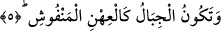
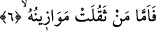

pervanlere benzetmektedir. Bir başka âyette ise, “yayılmış çekirge” sürüsüne
benzetmektedir. Yayılmış çekirgelere benzetme yönü, çokluk ve sağa sola gitme hâli;
pervanelere benzetme yönü de herbirinin hareket yönünün farklı olmasıdır. Çünkü onlar
dirildikleri zaman dehşete düşecekler ve tıpkı pervaneler gibi her biri bir tarafa
gidecektir. Pervaneler de uçtuklarında hepsi aynı yöne gitmez, herbiri farklı bir tarafa
doğru uçar.
Bu âyet-i kerimede, fânî olan sâlikin, şühûd-i Ahadî’de pervaneler gibi zillet içinde
ve farklı farklı yönlerde olduğuna, hattâ ondan daha hakîr ve zelîl olduğuna işâret
edilmektedir. Çünkü muvahhidin gözünde o makâmın hiçbir değer ve tesiri yoktur.
5. Dağların da atılmış renkli yüne dönüştüğü gündür (o Kâria!)
Bu âyette yer alan “ıhn” kelimesi, çeşitli renklerde boyanmış renkli yün demektir.
“Menfûş” kelimesinin kökü olan “nefş” ise kılı, yünü ve pamuğu parmakla ditmek,
dağıtmak ve birbirine girmiş olanları gevşetip ayırmak demektir.
İmâm Secâvendî der ki: Dağlar, sağlam iken hafiflemesi yönüyle yüne, renkliliği
açısından boyalı yüne, geçip gitmesi ve hareketleri açısından da atılmış yüne
benzetilmiştir. Burada bilhassa “Ihn” kelimesinin tercih edilmiş olması, dağların
renkleri sebebiyledir. Nitekim Allah Teâlâ bir âyette şöyle buyurur: “…Dağlardan da
yollar var, beyazlı kırmızılı, renkleri muhtelif, hem de kuzgûnî siyahlar.” (Fatır,
35/27)
O gün dağlar; parçalanarak un ufak olmaları ve havada uçuşmaları açısından çeşitli
renklerde boyanmış ve atılmış yün gibi olacaktır. Her iki durum da, sûra ikinci kez
üfürülüşten sonra, yaratıkların dirildikleri anda meydana gelecek olan “Kâria
neticesinde ortaya çıkacak hâdiselerdendir. O gün Allah Teâlâ, yeryüzünü başka bir
yeryüzü ile değiştirir, onun yapısını değiştirir, zikredilen korkunç durumlara uygun
olarak dağları yerlerinden yürütür, ta ki mahşer halkı bunları görsün. Dağlar her ne
kadar sûra birinci üfürülüş esnâsında darmadağınık olacak, parça parça dökülecekse
de, onların yerlerinden yürütülmesi ve yerin dümdüz edilmesi ancak sûra ikinci kez
üfürülüşün ardından olacaktır.
6. O gün kimin tartılan ameli ağır gelirse
Bu âyette yer alan ve “tartılar” diye ifâde edilen “mevâzîn” kelimesi “mevzûn”